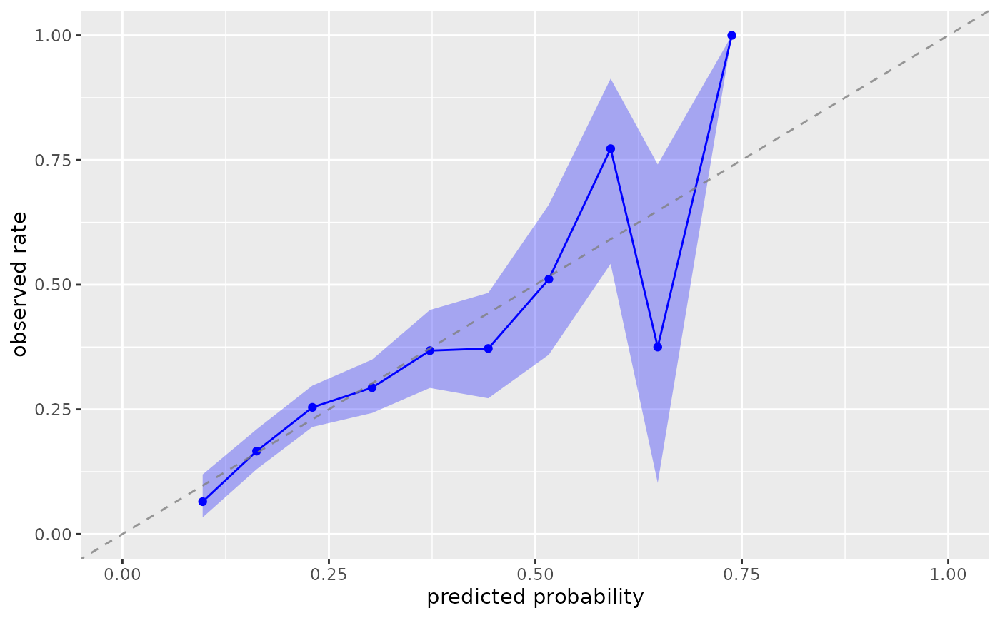
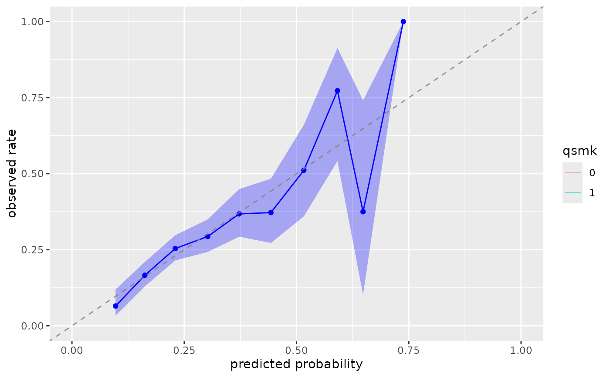
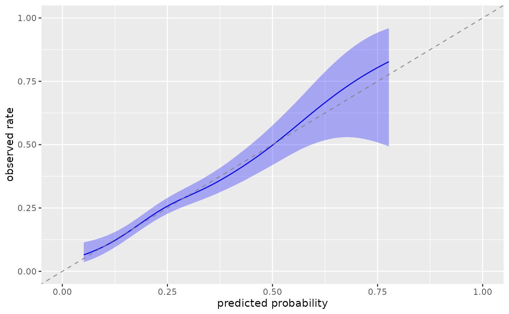
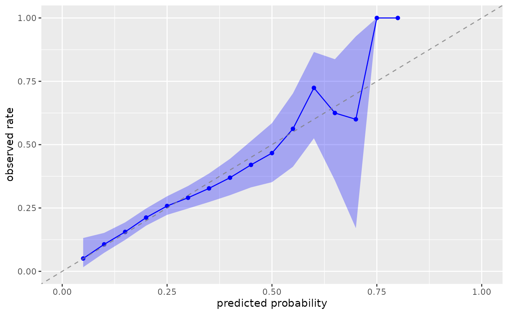
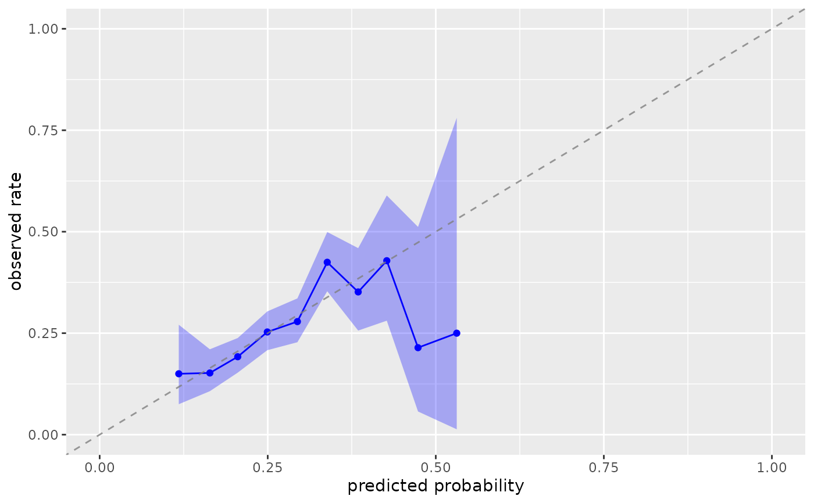

Create a calibration plot to assess the agreement between predicted
probabilities and observed treatment rates. This function wraps
geom_calibration().
Usage
plot_model_calibration(x, ...)
# S3 method for class 'data.frame'
plot_model_calibration(
x,
.fitted,
.group,
treatment_level = NULL,
method = "breaks",
bins = 10,
smooth = TRUE,
conf_level = 0.95,
window_size = 0.1,
step_size = window_size/2,
k = 10,
include_rug = FALSE,
include_ribbon = TRUE,
include_points = TRUE,
na.rm = FALSE,
...
)
# S3 method for class 'glm'
plot_model_calibration(
x,
treatment_level = NULL,
method = "breaks",
bins = 10,
smooth = TRUE,
conf_level = 0.95,
window_size = 0.1,
step_size = window_size/2,
k = 10,
include_rug = FALSE,
include_ribbon = TRUE,
include_points = TRUE,
na.rm = FALSE,
...
)
# S3 method for class 'lm'
plot_model_calibration(
x,
treatment_level = NULL,
method = "breaks",
bins = 10,
smooth = TRUE,
conf_level = 0.95,
window_size = 0.1,
step_size = window_size/2,
k = 10,
include_rug = FALSE,
include_ribbon = TRUE,
include_points = TRUE,
na.rm = FALSE,
...
)
# S3 method for class 'halfmoon_calibration'
plot_model_calibration(
x,
include_rug = FALSE,
include_ribbon = TRUE,
include_points = TRUE,
...
)Arguments
- x
Either a fitted model object (lm or glm) or a data frame
- ...
Additional arguments passed to methods
- .fitted
Column name of predicted probabilities (propensity scores). Can be unquoted (e.g.,
.fitted) or quoted (e.g.,".fitted").- .group
Column name of treatment/group variable. Can be unquoted (e.g.,
qsmk) or quoted (e.g.,"qsmk").- treatment_level
Value indicating which level of
.grouprepresents treatment. If NULL (default), uses the last level for factors or max value for numeric.- method
Character; calibration method - "breaks", "logistic", or "windowed".
- bins
Integer >1; number of bins for the "breaks" method.
- smooth
Logical; for "logistic" method, use GAM smoothing if available.
- conf_level
Numeric in (0,1); confidence level for CIs (default = 0.95).
- window_size
Numeric; size of each window for "windowed" method.
- step_size
Numeric; distance between window centers for "windowed" method.
- k
Integer; the basis dimension for GAM smoothing when method = "logistic" and smooth = TRUE. Default is 10.
- include_rug
Logical; add rug plot showing distribution of predicted probabilities.
- include_ribbon
Logical; show confidence interval ribbon.
- include_points
Logical; show points (only for "breaks" and "windowed" methods).
- na.rm
Logical; if TRUE, drop NA values before computation.
Details
Calibration plots visualize how well predicted probabilities match observed outcome rates. Since outcomes are binary (0/1), the "observed rate" represents the proportion of units with outcome = 1 within each prediction group. For example, among all units with predicted probability around 0.3, we expect approximately 30% to actually have the outcome. Perfect calibration occurs when predicted probabilities equal observed rates (points fall on the 45-degree line).
The plot supports three calibration assessment methods:
"breaks": Bins predictions into groups and compares mean prediction vs observed rate within each bin
"logistic": Fits a logistic regression of outcomes on predictions; perfect calibration yields slope=1, intercept=0
"windowed": Uses sliding windows across the prediction range for smooth calibration curves
The function supports two approaches:
For regression models (lm/glm): Extracts fitted values and observed outcomes automatically
For data frames: Uses specified columns for fitted values and treatment group
See also
geom_calibration()for the underlying geomcheck_model_calibration()for numerical calibration metricsplot_stratified_residuals()for residual diagnostic plotsplot_model_roc_curve()for ROC curvesplot_qq()for QQ plots
Examples
library(ggplot2)
# Method 1: Using data frame
plot_model_calibration(nhefs_weights, .fitted, qsmk)
#> Warning: Small sample sizes or extreme proportions detected in bins 9, 10 (n = 8, 3).
#> Confidence intervals may be unreliable. Consider using fewer bins or a
#> different calibration method.
#> Warning: Small sample sizes or extreme proportions detected in bins 9, 10 (n = 8, 3).
#> Confidence intervals may be unreliable. Consider using fewer bins or a
#> different calibration method.
#> Warning: Small sample sizes or extreme proportions detected in bins 9, 10 (n = 8, 3).
#> Confidence intervals may be unreliable. Consider using fewer bins or a
#> different calibration method.

# With rug plot
plot_model_calibration(nhefs_weights, .fitted, qsmk, include_rug = TRUE)
#> Warning: Small sample sizes or extreme proportions detected in bins 9, 10 (n = 8, 3).
#> Confidence intervals may be unreliable. Consider using fewer bins or a
#> different calibration method.
#> Warning: Small sample sizes or extreme proportions detected in bins 9, 10 (n = 8, 3).
#> Confidence intervals may be unreliable. Consider using fewer bins or a
#> different calibration method.
#> Warning: Small sample sizes or extreme proportions detected in bins 9, 10 (n = 8, 3).
#> Confidence intervals may be unreliable. Consider using fewer bins or a
#> different calibration method.

# Different methods
plot_model_calibration(nhefs_weights, .fitted, qsmk, method = "logistic")

plot_model_calibration(nhefs_weights, .fitted, qsmk, method = "windowed")
#> Warning: Small sample sizes or extreme proportions detected in windows centered at 0.7,
#> 0.75, 0.8 (n = 5, 3, 1). Confidence intervals may be unreliable. Consider using
#> a larger window size or a different calibration method.
#> Warning: Small sample sizes or extreme proportions detected in windows centered at 0.7,
#> 0.75, 0.8 (n = 5, 3, 1). Confidence intervals may be unreliable. Consider using
#> a larger window size or a different calibration method.
#> Warning: Small sample sizes or extreme proportions detected in windows centered at 0.7,
#> 0.75, 0.8 (n = 5, 3, 1). Confidence intervals may be unreliable. Consider using
#> a larger window size or a different calibration method.

# Specify treatment level explicitly
plot_model_calibration(nhefs_weights, .fitted, qsmk, treatment_level = "1")
#> Warning: Small sample sizes or extreme proportions detected in bins 9, 10 (n = 8, 3).
#> Confidence intervals may be unreliable. Consider using fewer bins or a
#> different calibration method.
#> Warning: Small sample sizes or extreme proportions detected in bins 9, 10 (n = 8, 3).
#> Confidence intervals may be unreliable. Consider using fewer bins or a
#> different calibration method.
#> Warning: Small sample sizes or extreme proportions detected in bins 9, 10 (n = 8, 3).
#> Confidence intervals may be unreliable. Consider using fewer bins or a
#> different calibration method.
# Method 2: Using model objects
# Fit a propensity score model
ps_model <- glm(qsmk ~ age + sex + race + education,
data = nhefs_weights,
family = binomial())
# Plot calibration from the model
plot_model_calibration(ps_model)
#> Warning: Small sample sizes or extreme proportions detected in bins 10 (n = 4).
#> Confidence intervals may be unreliable. Consider using fewer bins or a
#> different calibration method.
#> Warning: Small sample sizes or extreme proportions detected in bins 10 (n = 4).
#> Confidence intervals may be unreliable. Consider using fewer bins or a
#> different calibration method.
#> Warning: Small sample sizes or extreme proportions detected in bins 10 (n = 4).
#> Confidence intervals may be unreliable. Consider using fewer bins or a
#> different calibration method.
